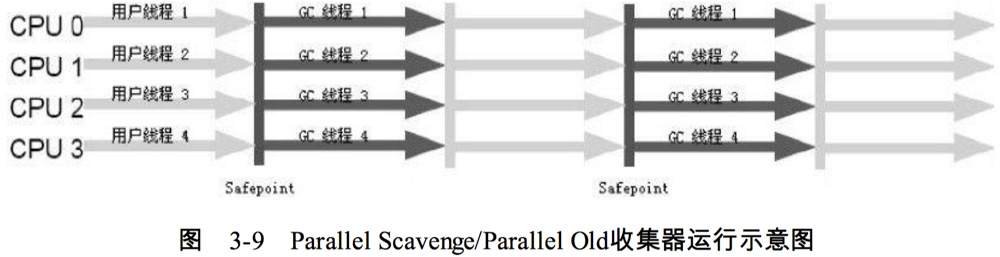

虚拟机内存模型
运行时数据区域：
- 方法区
- 虚拟机栈
- 本地方法栈
- 堆（Heap）
- 程序计数器
存储区域详解：
程序计数器：
- 一个处理器（单核）在同一时刻只能执行一个线程中的指令。因此每个线程都有一个独立的程序计数器，线程之间计数器互不影响，独立存储。线程私有的内存
- 线程执行java方法时，这个计数器记录的是正在执行的虚拟机字节码指令地址，执行native方法时，计数器则为空(
undefined)。
- 此内存区域是唯一一个在java虚拟机规范中没有规定任何
OutOfMemoryError情况的区域。
java虚拟机栈：
- 线程私有，生命周期与线程同
- 描述的是java方法执行的内存模型：每个方法在执行的同时都会创建一个栈帧（
stack frame）用于存储局部变量表、操作数栈、动态链接、方法出口等信息。
- java内存区通常被分为堆（
Heap）和栈（Stack），这种方法比较粗糙，实际远比这复杂。这种划分是因为程序员最关心的、与对象内存分配关系最密切的内存区域是这两块。栈：即是java虚拟机栈或者说是其中局部变量表部分。
- 局部变量表存放的是编译期可知的各种基本数据类型（
int、byte等）、对象引用（reference类型，不等同对象本身，可能是指向对象起始地址的引用指针，也可能是指向一个代表对象的句柄或其他与此对象相关的位置）和returnAddress类型（指向了一条字节码指令的地址）。且所需的内存空间在编译期完成分配。
- 异常：
- 线程请求的栈深度大于虚拟机允许的深度，抛出
StackOverflowError异常- 如果虚拟机可以动态扩展（当前大部分的java虚拟机都支持动态扩展，也允许固定长度的栈）如果扩展时无法申请到足够的内存，抛出
OutOfMemoryError异常。
本地方法栈：
- 与虚拟机栈作用相似。区别为java虚拟机栈为java方法（字节码）提供服务，本地方法栈为native方法提供服务。
java堆：
- java虚拟机所管理的内存中最大的一块。是被所有线程共享的一块内存区域，在虚拟机启动时创建。
- 目的：存放对象实例，几乎所有的对象实例都是在这里分配内存。在java虚拟机规范中的描述：所有对象实例以及数组都要在堆上分配。但是随着JIT编译器的发展与逃逸分析技术逐渐成熟，栈上分配、标量替换优化技术将会导致一些微妙的变化发生，因此没那么绝对了。
- java垃圾收集器管理的主要区域，因此有GC堆（
Garbage Collected Heap）之称。从内存回收的角度看，由于现在的收集器基本都是采用分代收集算法，所以可以细分为：新生代和老年代；再细致一点：Eden空间、From Survivor空间、To Survivor空间等。从内存分配的角度看，线程共享的java堆中可能划分出多个线程私有的分配缓冲区（Thread Local Allocation Buffer，TLAB）。划分的目的是为了更好的对内存进行分配和回收，与存放内容无关。
- java堆可以处于物理上不连续的内存空间中，只要逻辑上连续即可。既可以实现成固定的大小，也可以是可扩展的，当前主流的虚拟机都是按照可扩展来实现的（通过
-Xmx和-Xms控制）。如果堆中没有内存完成实例分配，并且堆也无法再扩展时，将会抛出OutOfMemoryError异常。
方法区：
- 与java堆一样，是各个线程共享的内存区域，用于存储已被虚拟机加载的类信息、常量、静态变量、即时编译器编译后的代码等数据。
- 运行时常量池（
Runtime Constant Pool）：方法区的一部分
- Class文件中除了有类的版本、字段、方法、接口等描述信息外，还有一项信息是常量池，用于存放编译期生成的各种字面量和符号引用，这部分内容将在类加载后进入方法区的运行时常量池中存放。
直接内存：
- 并不是虚拟机运行时数据区的一部分，也不是java虚拟机规范中定义的内存区域。但是被频繁使用，且可能导致
OutOfMemoryError异常。
- JDK1.4中新加入了NIO类，引入了一种基于通道（
Channel）与缓冲区的I/O方式，它可以使用native函数库直接分配堆以外的内存，然后通过一个存储在java堆中的DirectByteBuffer对象作为这块内存的引用进行操作。这样能在一些场景中显著提高性能，因为避免了在java堆和native堆中来回复制数据。
HotSpot虚拟机对象
对象创建：
内存分配方式：
- 指针碰撞：假设java堆中的内存是绝对规整的，已分配与未分配的内存有且仅有一个分界点，分配内存时则分界根据分配大小移动。要求垃圾回收器带有压缩整理功能。使用
Serial、ParNew带Compact过程的收集器采用。
- 空闲列表：堆中的内存不规整，已使用与未使用的内存交错，虚拟机必须维护一个列表，记录内存块的使用与空闲，分配时从列表中找出一块足够大的空间给新的对象实例，并更新到列表上。使用
CMS这种基于Mark-Sweep算法的收集器使用。- 线程安全：
- A对象分配内存时还未来得及修改指针，B对象同时也是用了原来的指针
- 方案1：对分配内存空间的动作进行同步处理，
CAS+失败重试机制保证原子性。- 方案2：内存分配的动作按照线程划分在不同的空间之中进行，每个线程预先分配一小块内存称为本地线程分配缓冲（
Thread Local Allocation Buffer，TLAB）。- 初始化：
- Step1: 内存分配完成后，虚拟机将空间初始化为0值（不包括对象头），使用TLAB时，可以提前到TLAB分配时进行。保证了对象的实例字段不赋初值即可使用。
- Step2: 对对象进行必要的设置，包含hash等在对象头中。
- Step3: 将对象按照程序员的意愿进行初始化
对象的内存布局：
- 对象在内存中存储的布局可以划分为3块区域：对象头（
Header）、实例数据（Instance Data）、对齐填充（Padding）。
- 对象头：包含两部分信息：
- a. 存储对象自身的运行时数据，如哈希码、GC分带年龄、锁状态标志、线程持有锁、偏向线程ID、偏向时间戳等，这部分数据的长度在32位和64位的虚拟机（未开启压缩指针）中分别为32bit和64bit，官方称之为
Mark Work。- b. 类型指针：即对象指向它的类元数据的指针，虚拟机通过这个指针来确定这个对象是哪个类的实例。并不是所有虚拟机实现都必须在对象上保留类型指针，即查找对象信息并不一定要经过对象本身。如果对象是java数组，对象头中必须有一块儿用于记录数组长度的数据，虚拟机可以通过普通java对象的元数据信息确定java对象大小，从数组元数据却不能。
- 实例数据：程序代码中所定义的各种类型字段内容。存储顺序会受到虚拟机分配策略参数和字段在java源码中定义顺序的影响。HotSpot默认分配策略为：longs/doubles、ints、shorts/chars、bytes/booleans、opps。若compactFields参数值为True，则子类之中较窄的变量可能插入到父类变量的空隙中。
- 对齐填充：占位符，8字节整数倍限制。不足8字节按8字节处理。
- 对象访问定位：通过栈上的
reference数据来操作堆上的对象
- 使用句柄：java堆中将会划分出一块内存作为句柄池，reference中放句柄地址，句柄中则包含了对象实例数据与各类型数据各自的具体地址信息。好处：reference中存储稳定的句柄地址，对象被移动时只改变句柄中实例数据指针即可
- 直接指针：java堆对象布局中需要考虑如何放置访问类型数据的相关信息，reference中为对象地址。好处：速度快，相比句柄节省了一次指针定位的时间开销。HotSpot使用。
- 内存溢出与内存泄露：
- 内存溢出：
- a. 内存不够分配对象的异常情况，解决办法：虚拟机参数（-Xms，-Xmx）与机器物理内存相比是否可以调大，从代码检查是否存在某些对象生命周期过长、持有状态时间过长等情况，尝试减少程序运行期的内存消耗。
- b. HotSpot虚拟机不区分虚拟机栈和本地方法栈，-Xoss参数无效
- c. 单个线程下，无论是由于栈帧太大还是虚拟机栈容量太小，当内存无法分配的时候，虚拟机抛出的都是StackOverFlowError异常。
- d. StackOverFlowError: 栈内存不足，OutOfMemoryError: 堆内存不足
- 内存泄露： 下标越界
垃圾回收与内存分配：
GC：指对java 堆和方法区的内存的回收。
对象回收依据：
- 引用计数法(
Reference Counting)：给对象添加一个引用计数器，有新的引用时+1，引用失效时-1，任何时刻计数器为0的对象就是不可能再被使用的。缺陷：循环引用。
- 可达性分析算法(
Reachability Analysis)：思路->通过一系列的成为“GC Roots”的对象作为起始点，从这些节点开始向下搜索，搜索所走过的路径成为引用链（Reference Chain），当一个对象到GC Roots没有任何引用链相连时（GC Roots 到此对象不可达），证明此对象是不可用的。java中可以作为GC Roots的对象包括:
- 虚拟机栈（栈帧中的本地变量表）中引用的对象。
- 方法区中类静态属性引用的对象。
- 方法区中常量引用的对象。
- 本地方法栈中JNI引用的对象。
引用：
描述：JDK1.2之前的版本中：如果reference类型的数据中存储的数值代表的是另外一块内存的起始地址，就称这块内存代表着一个引用。纯粹而又狭隘。1.2之后将引用分为强引用、软引用、弱引用、虚引用四种，引用强度依次逐渐减弱。
- 强引用：程序代码中普遍存在，类似
Object obj=new Object()这类引用，强引用还在就永远不会被回收掉。- 软引用：一些还有用但是并非必须的对象。系统将要发生内存溢出之前将会把这些对象列入回收范围进行二次回收。JDK1.2之后中提供了
SoftReference支持。- 弱引用：非必须的对象，比软引用更弱一些，被弱引用关联的对象只能生存到下一次垃圾收集发生之前，不论垃圾回收之前内存是否足够。
WeakReference- 虚引用：也称幽灵引用或者幻影引用，最弱的引用。不会对生存构成影响，无法通过虚引用获得对象实例。设置虚引用目的：能在对象被回收器回收时获得一个系统通知。
PhantomReference。
finalize(): 运行代价高昂，不确定性大，无法保证各个对象的调用顺序。尽量避免使用。
回收方法区：
方法区：
HotSpot中的永久代。垃圾收集效率低。
HotSpot参数控制：-Xnoclassgc,-verbose:class -XX:+TraceClassLoading -XX:+TraceClassUnLoading
应用场景：大量使用反射、动态代理、CGLib等ByteCode框架、动态生成JSP以及OSGi这类频繁自定义ClassLoader的场景。保证永久代不会溢出。
收集内容：
- 废弃常量。与回收java堆中的对象非常相似。
- 无用的类。判断无用的条件：
- 该类所有的实例都已经被回收；
- 加载该类的
ClassLoader已经被回收；- 该类的
java.lang.Class对象没有在任何地方被引用，无法在任何地方通过反射访问该类的方法。
垃圾收集算法：
- 标记-清除（
Mark-Sweep）法：最基础的收集算法。主要不足：
- 效率问题，标记和清除的效率都不高。
- 空间问题，产生大量不连续的内存碎片。
- 复制（
Copying）算法：将可用内存分为大小相等的两块，每用其一，用完时复制存活对象到另一半，一次清理已使用一半内存。实现简单，运行高效，但内存减半浪费过大。
- 98%新生代生命周期短，不需要按1：1分配内存。
- 内存分配为一块较大Eden和两块较小Survivor，默认比例8：1（hotSpot)
- Survivor空间不够时，需要依赖老年代进行分配担保。
- 不足：对象存活较多时操作频繁，效率低下。需要额外的空间担保应对使用中对象100%存活的情况。不可使用到老年代中。
- 标记-整理（
Mark-Compact)算法：针对老年代。标记算法与标记清除一致，但后续步骤为：存活对象向内存同一端移动，清理掉端边界以外的内存。
- 分代收集（
Generational Collection）算法：根据对象存活周期的不同划分内存为几块。
- 一般为将Java堆分为新生代、老年代
- 新生代：复制算法
- 老年代：标记-清理或者标记-整理算法
HotSpot算法实现：
- 枚举根节点：使用一组称为
OopMap的数据结构来解决根节点枚举。
- GC停顿:
Stop The World。枚举根节点时必须要停顿所有Java线程执行。不包括JNI线程。
- 安全点(
Safepoint)：
- 程序并非在所有地方都能停下来GC，只有到安全点才能暂停。数量多：增大运行负荷，少：GC等待时间太长。
- 选定依据：程序是否具有让程序长时间执行的特征——指令序列复用，如方法调用、循环跳转、异常跳转等。
- GC发生时让所有线程都停顿在最近的安全点：
抢先式中断（Preemptive Suspension）：不需要线程执行代码的主动配合，GC发生时，中断全部线程，并恢复非安全点线程到安全点上。几乎无JVM采取。主动式中断（Voluntary Suspension）：设一标志，线程执行时去轮询，发现中断标志置真时自己中断挂起。轮询标志的地方和安全点是重合的，另外再加上创建对象需要分配内存的地方。
- 安全区域（
Safe region）：
- 解决不运行状态的线程的GC问题。
Sleep、Blocked状态的线程。- 指在一段代码片段中，引用关系不发生变化。任意地方开始GC都是安全的。
- 线程执行到SR时，标识自己已经进入了SR。JVM发起GC时，不管标识SR的线程。线程离开SR时，检查是否完成GC，是则继续执行，否则等待。
垃圾收集器
Serial收集器
- 最基本、发展历史最悠久。
- 单线程，收集时需要暂停其它所有工作线程，直至结束。
- 目前（2015年）
Client模式下默认的新生代收集器。- 优点：简单而高效，无线程交互的开销。
ParNew收集器：
- Serial收集器的多线程版本。
- 与Serial使用相同的：控制参数、收集算法、StopTheWorld、对象分配规则、回收策略等
- 场景：许多运行于
Server模式下的首选新生代收集器。- 除Serial以外唯一能与CMS收集器配合的收集器
- 并行（
Parallel）：指多条垃圾收集线程并行工作，但此时用户线程仍然处于等待状态。- 并发（
Concurrent）：指用户线程与垃圾回收线程同时执行（但不一定是并行的，可能会交替执行），用户程序在继续运行，而垃圾收集程序运行于另一个CPU上。
Parallel Scavenge收集器：
- 新生代、使用复制算法，并行多线程，吞吐量优先收集器
- 关注点：达到一个可控制的吞吐量（Throughput）–就是CPU用于运行用户代码的时间与CPU总消耗时间的比值：吞吐量=运行用户代码时间/(运行用户代码时间+垃圾收集时间)。别的收集器如CMS关注点是尽可能地缩短垃圾收集时用户线程的停顿时间。
- 停顿时间较短适合交互；高吞吐量可以高效率使用CPU，尽快完成计算任务，适合非交互性后台运算。
- GC自适应的调节策略（
GC Ergonomics）：虚拟机设置了-XX:+UseAdaptiveSizePolicy之后不需要再指定新生代的大小（-Xmn）、Eden与Survivor区的比例（-XX:SurvivorRatio）、晋升老年代对象年龄（-XX:PretenureSizeThreshold）等细节参数了，虚拟机会根据当前系统的运行情况收集性能监控信息，动态调整这些参数以提供最合适的停顿时间或者最大的吞吐量。
Serial Old收集器：
- Serial收集器的老年代版本，单线程收集器，使用“标记-整理”算法
- 主要意义在于给Client模式下的虚拟机使用，Server模式下两大用途：
- 在JDK1.5以及之前的版本中与Parallel Scavenge收集器搭配使用;
- 作为CMS收集器的后备预案，并发收集器发生Concurrent Mode Failure时使用。
Parallel Old收集器：

Parallel Scavenge的老年代版本，多线程，“标记-整理”算法
CMS收集器：
- Concurrent Mark Sweep，标记-清除算法，多线程并发、低停顿。目标：获取最短回收停顿时间，适用于交互服务
- 收集过程
- 初始标记（
CMS initial mark）：Stop the world（STW），速度快，仅仅标记一下GC Roots能直接关联到的对象
- 并发标记（
CMS concurrent mark）：进行GC RootsTracing
- 重新标记（
CMS remark）：（STW）修正并发标记期间因用户程序继续运作而导致标记产生变动的对象的标记记录，停顿时间稍长于1，远短于2
- 并发清除（
CMS concurrent sweep）：
- 缺点：
- 对CPU资源非常敏感，占用一部分线程使程序变慢，吞吐量降低（默认回收线程数(CPU数量+3)/4，变种“增量式并发收集器”（抢占模式）效果一般
- 无法处理浮动垃圾（Floating garbage，并发清理阶段还运行着的线程新产生的垃圾，出现在标记过程之后），可能出现Concurrent Mode Failure失败导致另一次Full GC的产生。原因：预留垃圾收集内存空间不足。
- “标记-清除”算法的缺点：大量空间碎片产生，所使用整理则停顿时间比较长。间隔整理法：清除n次则整理1次。
G1收集器：
- Garbage-First，最前沿的成果之一，面向服务端。
- 与CMS相比特点：
- 并行与并发：充分利用多CPU、多核环境下的优势，使用多个CPU缩短stw时间
- 分代收集：不需要其他收集器配合，但依然可以分代收集。
- 空间整合：整体来看基于“标记-整理”，局部（两个region之间）基于“复制”，不会产生内存空间碎片，利于长时间运行程序。
- 可预测的停顿：可以建立可预测的停顿时间模型，能让使用者明确指定在一个成都为M毫秒的时间片段内，消耗在垃圾收集上的时间不得超过N毫秒，几乎已经是实时java(RTSJ)的垃圾收集器的特征了。
- 打破老年代新生代的物理隔离，将java堆划分为多个大小相等的独立区域（Region），老年代新生代都是一部分region的集合
- G1收集器之所以能建立可预测的停顿时间模型，是因为它可以有计划地避免在整个Java 堆中进行全区域的垃圾收集。G1跟踪各个Region里面的垃圾堆积的价值大小（回收所获得的 空间大小以及回收所需时间的经验值），在后台维护一个优先列表，每次根据允许的收集时 间，优先回收价值最大的Region（这也就是Garbage-First名称的来由）。这种使用Region划分 内存空间以及有优先级的区域回收方式，保证了G1收集器在有限的时间内可以获取尽可能高 的收集效率。
- 回收过程
- 初始标记
- 并发标记
- 最终标记
- 筛选回收（
live data counting and evacuation）
内存分配与回收策略
- 对象优先在Eden分配:
Minor GC：新生代GC，非常频繁，速度快；Major GC/Full GC：老年代GC，经常会伴随至少一次Minor GC（非绝对，Parallel Scavenge收集器手机策略就可以直接进行MajorGC策略选择过程），比Minor慢1-倍以上。
- 大对象直接进入老年代：
- 大对象：需要大量连续内存空间的Java对象，如很长的字符串、数组。
- 大对象对虚拟机的内存分配来说就是一个坏消息（更坏的是遇到一群“朝生暮死”的短命大对象）。经常出现大对象容易导致内存还有不少空间时就提前出发垃圾收集以获取足够的连续空间来存储之。
- 虚拟机提供了一个
-XX：PretenureSizeThreshold参数，令大于这个设置值的对象直接在老 年代分配。这样做的目的是避免在Eden区及两个Survivor区之间发生大量的内存复制（复习 一下：新生代采用复制算法收集内存）。
- 长期存活的对象将进入老年代：
- 虚拟机给每个对象定义了一个对象年龄计数器，如果对象在Eden出生并经过第一次MinorGC后仍然存活，并且能被Survivor容纳的话，将被移动到Survivor空间中，并且对象年龄设为1。
- 对象在Survivor每熬过一次MinorGC年龄就加1，当增加到大于默认值（15）时，晋升老年代，可通过
-XX:MaxTenuringThreshold设置。
- 动态对象年龄判定：
MaxTenuringThreshold不是唯一判定条件，如果在Survivor空间中相同年龄所有对象大小的总和大于Survivor空间的一半，年龄大于或等于该年龄的对象就可以直接进入老年代
- 空间分配担保：
MinorGC之前，虚拟机会先检查老年代最大可用的连续空间，大于新生代所有对象总空间时，可确保安全；- 1条件不成立时，则虚拟机会查看
HandlePromotionFailure设置值是否允许担保失败。如果允许，那么会继续检查老年代 最大可用的连续空间是否大于历次晋升到老年代对象的平均大小，如果大于，将尝试着进行 一次Minor GC，尽管这次Minor GC是有风险的；如果小于，或者HandlePromotionFailure设置 不允许冒险，那这时也要改为进行一次Full GC。
虚拟机性能监控与故障处理工具：
1 | jps -lv |
- 集群间同步导致的内存溢出
- 堆外内存导致的溢出错误
- 外部命令导致系统缓慢->调用shell脚本或者大量使用fork
- 服务器JVM进程崩溃
- 不恰当数据结构导致内存占用过大
- 由windows虚拟内存导致的长时间停顿
虚拟机类加载机制：
概述
- Java类型的加载、连接和初始化过程都是在程序运行期间完成的，这种策略会在类加载时稍微增加一些性能开销，但提供了高度的灵活性。天生可以动态扩张的语言特性就是依赖运行期动态加载和动态连接这两个特点实现的。
- 如：如果编写一个面向接口的应用程序， 可以等到运行时再指定其实际的实现类；用户可以通过Java预定义的和自定义类加载器，让 一个本地的应用程序可以在运行时从网络或其他地方加载一个二进制流作为程序代码的一部 分，这种组装应用程序的方式目前已广泛应用于Java程序之中。从最基础的Applet、JSP到相 对复杂的OSGi技术，都使用了Java语言运行期类加载的特性。
类加载的时机
- 加载、验证、准备、初始化、卸载这5个阶段的顺序是确定的。类加载过程必须按照这种顺序按部就班地开始。解析阶段则不一定：某些情况下可以在初始化阶段后再开始以支持Java的运行时绑定（也称为动态绑定或晚期绑定）。这些阶段通常都是互相交叉地混合式进行的，通常会在一个阶段执行的过程中调用、激活另外一个阶段。
- 初始化触发条件
- 遇到
new、getstatic、putstatic、invokestatic这4条字节码指令是，类未进行初始化java.lang.reflect对类进行反射时，类未初始化- 初始化一个类时，其父类尚未初始化，则搞其父(接口不要求，使用时初始化)
- 虚拟机启动时，虚拟机初始化用户指定的主类（包含main()方法）
- JDK1.7动态语言支持时，一个
java.lang.invoke.MethodHandle实例最后的解析结果REF_getStatic、REF_putStatic、REF_invokeStatic的方法句柄，并且这个方法句柄 所对应的类没有进行过初始化，则需要先触发其初始化。
类加载过程：
加载、验证、准备、解析、初始化
加载：
- 完成三件事情
- 通过类的全限定名来获取定义此类的二进制字节流（获取源：ZIP、JAR、网络（Applet）、运行时计算生成（动态代理）、其他文件生成（JSP）、数据库中读取）
- 将这个字节流所代表的静态存储结构转化为方法区的运行时数据结构
- 内存中生成代表此类的class对象，作为方法区这个类的各种数据的访问入口。
- 数组类由Java虚拟机直接创建
- 如果数组的组件类型（
Component Type，指的是数组去掉一个维度的类型）是引用类 型，那就递归采用本节中定义的加载过程去加载这个组件类型，数组C将在加载该组件类型 的类加载器的类名称空间上被标识- 如果数组的组件类型不是引用类型（例如int[]数组），Java虚拟机将会把数组C标记为与引导类加载器关联。
- 数组类的可见性与它的组件类型的可见性一致，如果组件类型不是引用类型，那数组类的可见性将默认为public。
验证：
- 连接阶段的第一步，目的是确保Class文件的字节流中包含的信息符合当前虚拟机的要求，并且不会危害虚拟机自身的安全。
- 大致分4个阶段的检验动作：
- 文件格式验证： 验证字节流是否符合Class文件格式的规范并且能被当前版本的虚拟机处理，验证点：
- 魔数0xCAFEBABE开头
- 主次版本号在当前虚拟机处理范围内
- 常量池的常量中是否有不被支持的常量类型（检查常量flag标志）
- 指向常量的各种索引值中是否有指向不存在或不符合类型的常量
- CONSTANT_Utf8_Info型常量中有否不符合UTF8编码的数据
- Class文件中各个部分及文件本身有否被参数或附加的其他信息
- 。。。
- 元数据验证：对字节码描述的信息进行语义分析，以保证其描述的信息符合java语言规范的要求，验证点：
- 有否父类（除Object之外，都应有父类）
- 是否继承了不被允许继承的类（final修饰）
- 非抽象类是否实现父类或接口要求实现的方法
- 类中字段、方法是否与父类产生矛盾
- 字节码验证：最复杂的阶段，主要目的是通过数据流和控制流分析，确定程序语义是合法的、符合逻辑的。对类的方法体校验分析，保证被校验类的方法在运行时不会做出危害虚拟机安全的事情。
- 符号引用验证：发生在虚拟机将符号引用转化为直接引用的时候，该动作在连接的第三阶段——解析阶段中发生。对类自身以外（常量池中的各种符号引用）的信息进行匹配性校验，确保解析动作能正常执行。
- 符号引用中通过字符串描述的全限定名是否能找到对应类
- 在指定类中是否存在符合方法的字段描述符以及简单名称所描述的方法和字段
- 符号引用中的类、字段、方法的访问性（
private、public等）是否可被当前类访问。- 。。。
- 验证阶段重要但不必要，可以使用
-Xverify:none关闭大部分类验证
准备：
- 正式为类变量分配内存并设置类变量初始值的阶段，这些变量所使用的内存都将在方法区中进行分配。
- 进行内存分配的仅包括类对象（被
static修饰），不包括实例变量，实例变量会在对象实例化时随对象一起分配到Java堆中。
- 这里所说的初始值通常是数据类型的0值，如
public static int value=123;准备阶段后初始值为0而不是123，赋值为123的putstatic指令是程序被编译后，存放于类构造器方法之中，初始化阶段才会赋值。有final修饰则准备阶段就会根据ConstantValue的设置赋值value
解析：
- 虚拟机将常量池内的符号引用替换为直接引用的过程
- 符号引用（
Symbolic Reference）：符号引用以一组符号来描述所引用的目标，符号可以是任何形式的字面量，只要使用时能无歧义地定位到目标即可。符号引用与虚拟机实现的内存布局无关，引用的目标并不一定已经加载到内存中。
- 直接引用（
Direct Reference）：直接引用可以是直接指向目标的指针、相对偏移量或是一个能间接定位到目标的句柄。直接引用是和虚拟机实现的内存布局相关的，同一个符号引 用在不同虚拟机实例上翻译出来的直接引用一般不会相同。如果有了直接引用，那引用的目标必定已经在内存中存在。